Most video production projects cost between €800 and €3,000 for small and medium-sized businesses.
Some simple videos come in under €800. Some larger commercial productions can go well beyond €5,000–€10,000.
But here’s the bit that most people don’t realise. Video production pricing isn’t really about the video itself. It’s about the process behind it and how much of that process is actually being done properly.
Because there’s a huge difference between, someone filming something quickly and someone building a story that actually communicates your message clearly and gets you the results you want.
So let’s go through it.
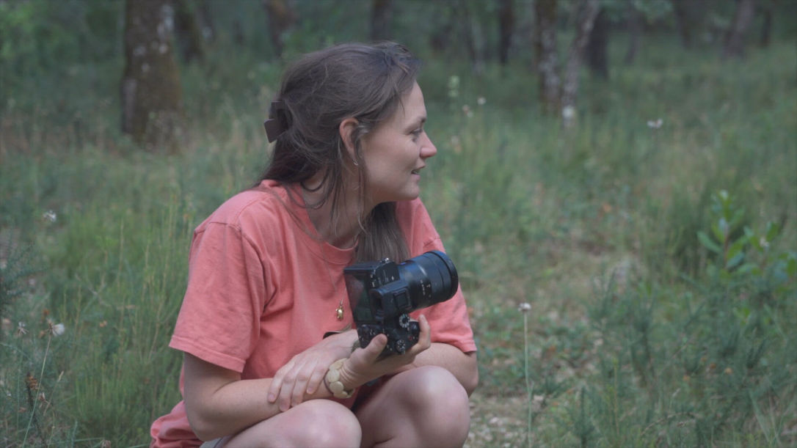
If you’ve searched for a videographer, you’ve probably seen quotes that make no sense at first glance.
One person says €300, another says €1,500, another says €6,000+.
And they all claim to do “professional video work”. So what’s the difference?
It usually comes down to one thing:
How much thinking is included in the process
Because video is not just filming.
It’s planning, decision-making, storytelling, and editing, before and after the camera turns on.
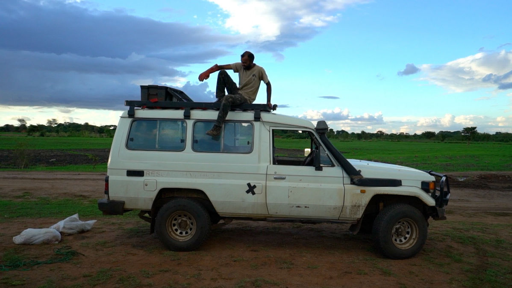
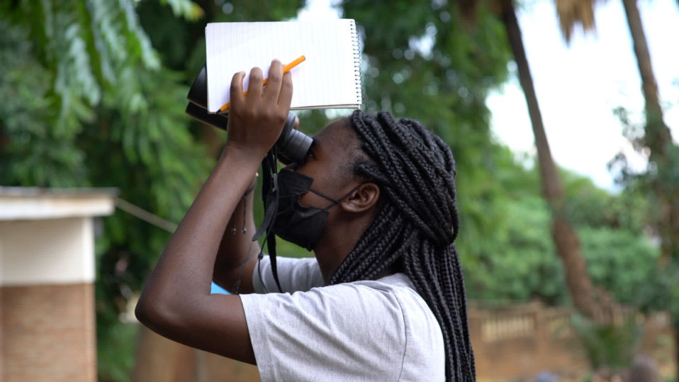
1. Pre-production
This is the part most people don’t see and often underestimate.
It includes:
Understanding your business or project
Defining a clear message
Identifying your audience
Structuring the story
Planning locations and logistics
Preparing interview questions or scripts
Deciding what actually needs to be filmed
If the message is unclear, no amount of beautiful filming can fix it.
2. Production
This is what most people think they’re paying for.
But filming is actually just execution.
On the day, the focus is on:
Camera work and composition
Lighting and sound quality
Capturing natural, unforced moments
Adapting to real situations as they happen
A big part of filming is not technical, it’s human. If people feel relaxed, the video feels real. If they feel pressured, the video feels staged.
3. Post-production
This is usually the most time-intensive part of the entire process.
It includes:
Selecting the best moments
Creating the narrative structure
Pacing
Sound design and music
Colour correction and grading
The same footage can feel completely different depending on how it is edited.
4. Revisions
Most projects include 1–2 rounds of revisions.
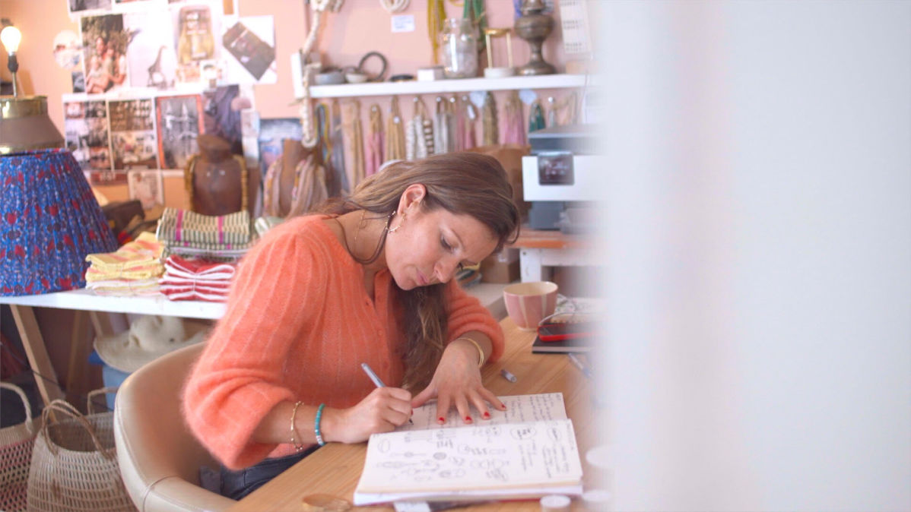
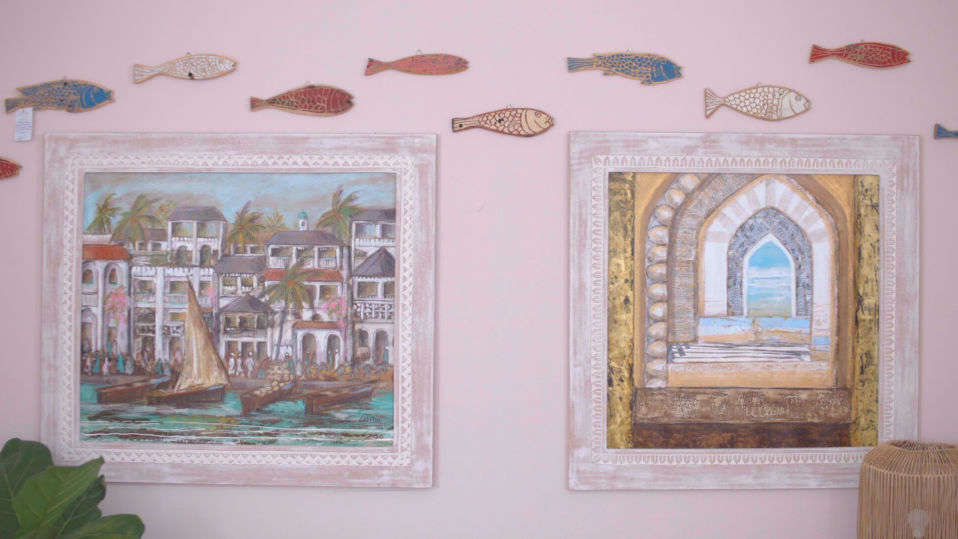
€800–€1,200 — Simple video content
Best for:
Social media content
Short promotional clips
Simple interviews
Quick business updates
Typically includes:
Basic planning
One filming session
Straightforward editing
1–2 revisions
€1,200–€3,000 — Business / brand video
Best for:
Brand storytelling
Website videos
Corporate communication
Marketing campaigns
Includes:
Structured pre-production
Story planning
Filming session(s)
Professional editing
Music + colour grading
Revisions
This is the “sweet spot” for most businesses, because it balances strategy, quality, and cost.
€3,000–€10,000+ — Commercial production
Best for:
Advertising campaigns
Larger organisations
Multi-day shoots
Complex storytelling projects
May include:
Multiple filming days
Actors or voiceover
Motion graphics
Advanced production planning
Additional crew
At this level, video production becomes closer to filmmaking than simple content creation.
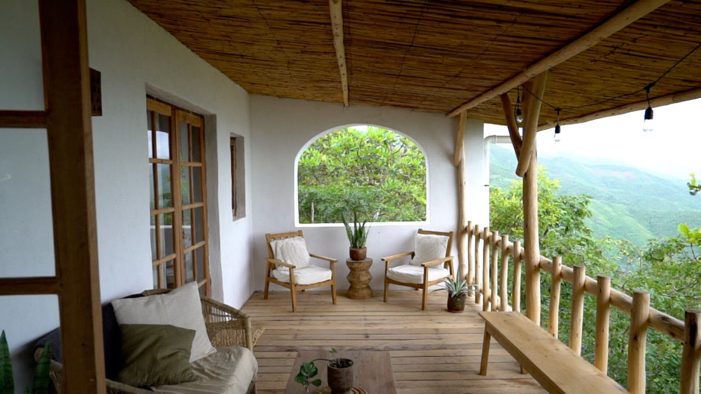
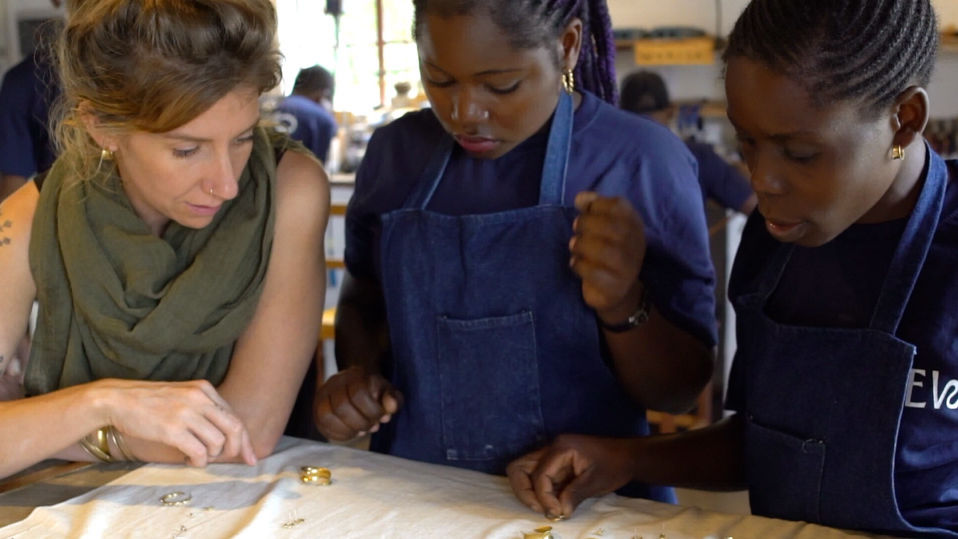
A lot of people think:
“I’m paying for someone to film with a camera.”
But, filming is usually only 20–30% of the total work.
The rest is:
Planning
Thinking through the story
Editing
Communication
Messaging
That’s where most of the value actually is and it’s also why prices vary so much between videographers.
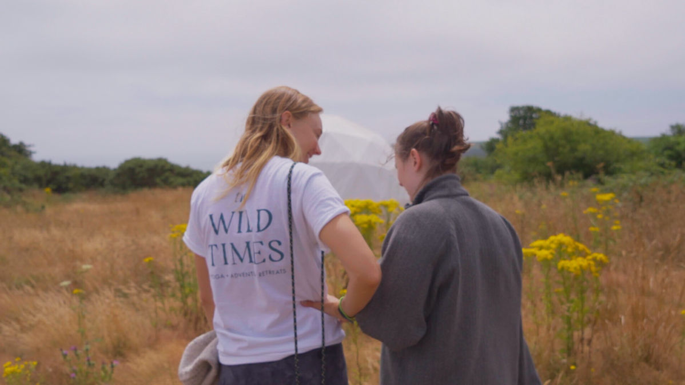
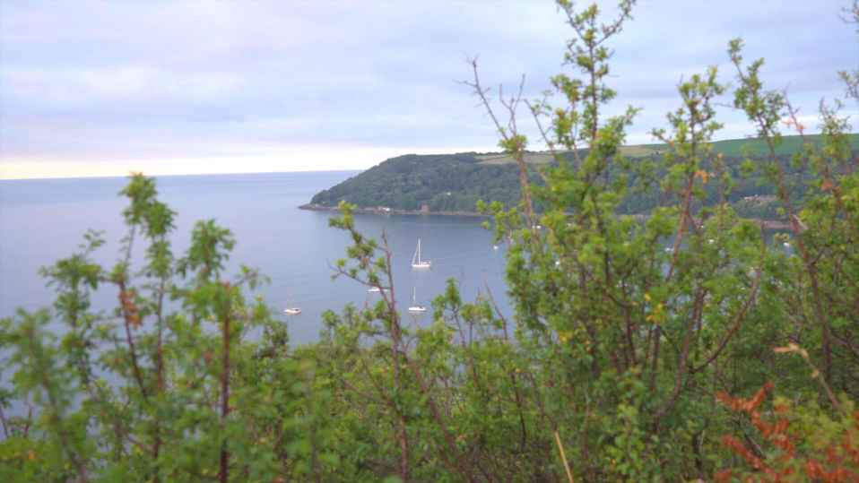
There are people offering video production for €200–€500.
And while that can technically produce a video, there’s usually a trade-off somewhere.
Minimal planning or strategy
Poor or inconsistent audio
Rushed filming sessions
No real story structure
Very limited editing time
No meaningful revisions
The result is usually a video that looks ok but doesn’t actually communicate anything clearly and if it doesn’t communicate, it doesn’t perform.
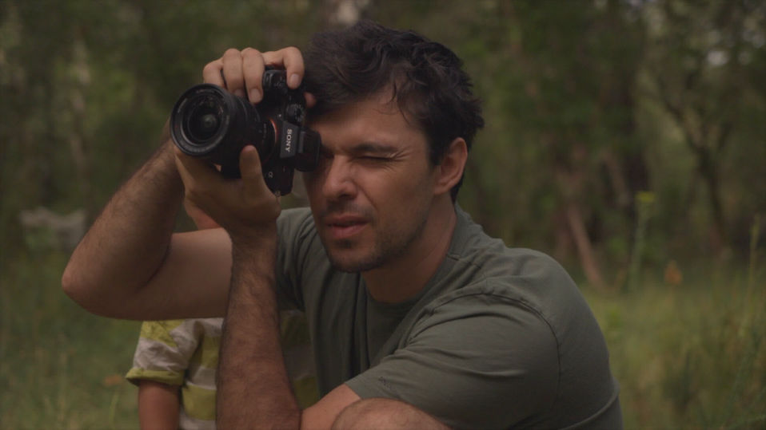
At Munjiri, most projects sit between €800 and €3,000, depending on scope.
The focus is not just making something look amazing.
It’s making something that:
Feels human
Connects with the right audience and continues working after it’s published.
We use a documentary-style combined with cinematic visuals, which keeps everything natural and grounded in real stories. Because people connect more with honesty than a performance.
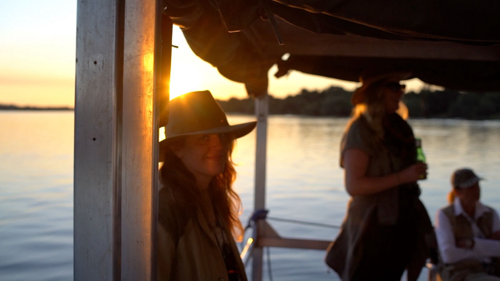
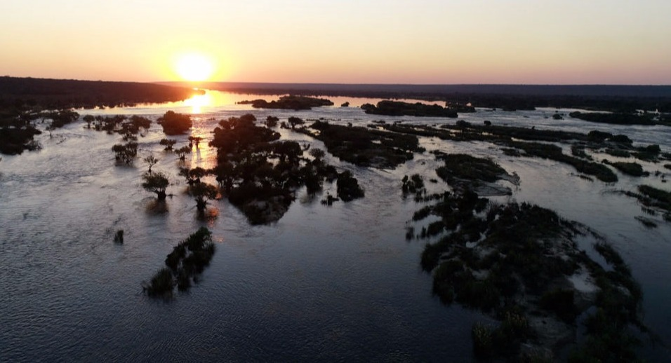
We follow a simple but structured process:
1. Understanding your message - What are we actually trying to say?
2. Planning the story - We structure the narrative and logistics.
3. Filming - Natural, relaxed, story-driven capture.
4. Editing - We shape everything into a clear and engaging story.
5. Delivery and guidance - We help you actually use the video effectively.
Most projects take 1–3 weeks from filming to final delivery, depending on complexity and revisions. More complex productions can take longer due to planning and editing requirements.
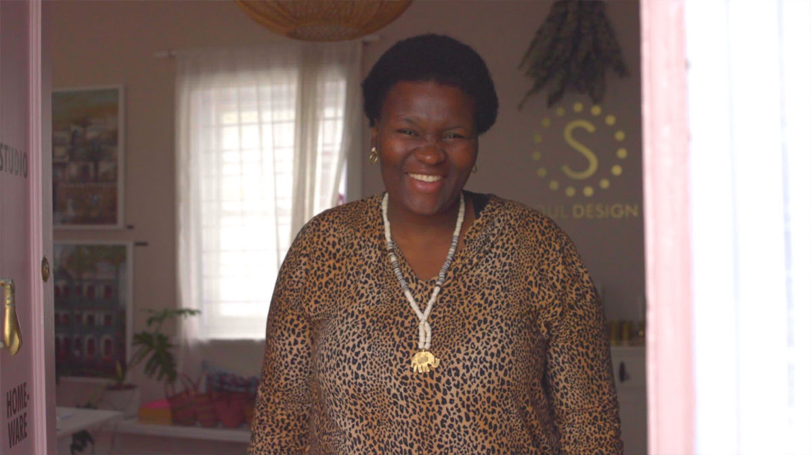
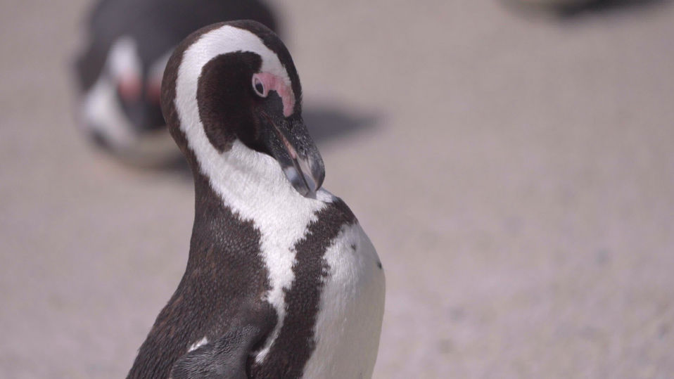
The main factors include:
Clarity of the message
Length of the video
Number of filming locations
Editing complexity
Number of revisions
Use of drones or additional equipment
Motion graphics
Licensing (music, voiceover, etc.)
If you’re thinking about creating a video for your business but aren’t sure what you need yet, the first step is usually a quick chat. We can help you figure out, what type of video makes sense, what your message should be and how to get the most from it.
You can email me here katy@munjiri.com
Blog Post by Katy co-founder of Munjiri Videos (or in plain English, I'm one of the two videographer's helping businesses share what they do!)
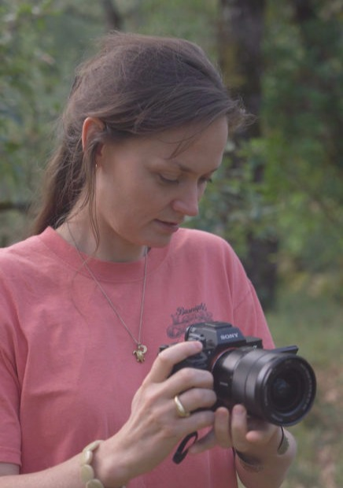